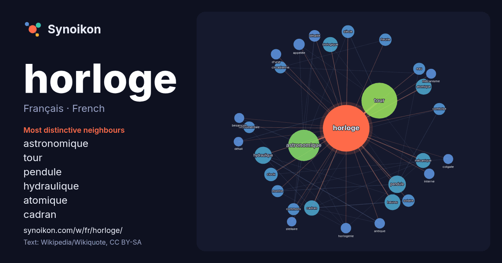

Français · French · word of the day list
horloge
“clock” · The words found around it in 1100 instances from French Wikipedia, Wikiquote.

Most distinctive neighbours
- astronomique 103×
- tour 41×
- pendule 35×
- hydraulique 32×
- atomique 27×
- cadran 26×
- biologique 23×
- mécanique 21×
- clock 21×
- fleurie 18×
- heures 17×
- circadienne 17×
- comtoise 17×
- commons 17×
- détaillé 15×
- solaire 15×
- monumentale 15×
- eau 14×
- horlogerie 13×
- d’une 13×
× = how many times more often than in general French Wikipedia text.
Most frequent neighbours
- tour 143
- astronomique 109
- pendule 34
- temps 34
- hydraulique 33
- grande 29
- atomique 28
- heures 28
- cadran 26
- biologique 25
- mécanique 25
- clock 20
- située 20
- siècle 18
- ancienne 17
- fleurie 17
- solaire 17
- circadienne 16
- commons 16
- comtoise 16
In context
- Pour les articles homonymes, voir Horloge (homonymie). Horloge Une horloge est un instrument de mesure du temps qui généralement indique l'heure en continu Wikipedia snippets · Horloge
- Ne doit pas être confondu avec Horloge nucléaire. Horloge atomique Une horloge atomique est une horloge qui utilise la pérennité et l'immuabilité de la Wikipedia snippets · Horloge atomique
- Pour les articles homonymes, voir Horloge (homonymie). Une horloge mécanique dite communément et simplement horloge est un instrument de mesure du temps Wikipedia snippets · Horloge mécanique
- ligne), p. 39-59. Horloge mécanique Liste de sociétés horlogères Associations horlogères Mécanique d'art Chronologie de l'horlogerie Montre mécanique Montre Wikipedia snippets · Horlogerie
- Une horloge astronomique est une horloge qui affiche l'heure ainsi que des informations relatives à l'astronomie. De façon générale, le terme fait référen … Wikipedia snippets · Horloge astronomique
- d'un autre article. Pour les articles homonymes, voir Horloge (homonymie). En biologie, une horloge circadienne est un mécanisme de régulation de processus Wikipedia snippets · Horloge circadienne
- projet avec les frères horlogers Josias (de) et Isaac Habrecht, ainsi qu'avec le peintre Tobias Stimmer. Cette horloge était une horloge astronomique planétaire Wikipedia snippets · Horloge astronomique de Strasbourg
- horloge (du grec hôra : heure ; et legein = logo : dire - parler) est un dispositif indiquant l'heure (ex. : horloge à eau, horloge à poids, horloge d' … Wikipedia snippets · Pendule (horloge)
More French words
- art
- automne
- carte
- chanson
- chat
- chemin
- cheval
- chien
- climat
- cloche
- cœur
- dieu
- désert
- eau
- famille
- forêt
- histoire
- hiver
- jardin
- langue
- miel
- miroir
- monnaie
- montagne
- mort
- mère
- nature
- nourriture
- ombre
- pain
- pluie
- pont
- pouvoir
- printemps
- santé
- science
- sel
- silence
- temps
- tempête
- thé
- train
- travail
- trésor
- vie
- ville
- vérité
- étoile
- île
Precomputed on 2026-10-09 with default settings (±5 words, medium corpus). The interactive map can refresh it with live data.